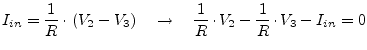
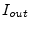
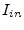
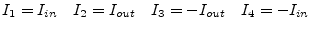
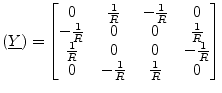
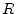
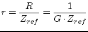
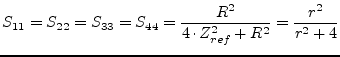
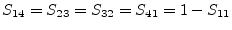
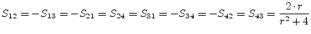

A gyrator is an impedance inverter. Thus, for example, it converts a capacitance into an inductance and vice versa. The ideal gyrator, as shown in fig. 9.6, is determined by the following equations which introduce two more unknowns in the MNA matrix.
|  | (9.133) |
The new unknown variables  and  must be considered by the four remaining simple equations.
|  | (9.135) |
As can be seen, a gyrator consists of two cross-connected VCCS (section 9.19.1). Hence, its y-parameter matrix is:
|  | (9.136) |
The scattering matrix of an ideal gyrator with the ratio  writes as follows.
|  | (9.137) |
|  | (9.138) |
|  | (9.139) |
|  | (9.140) |